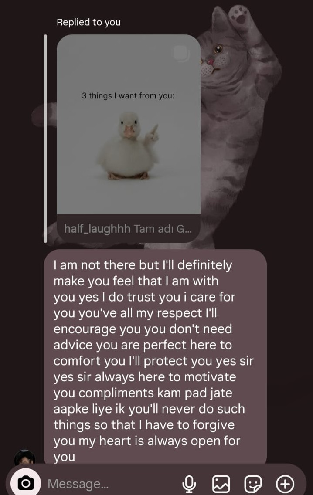
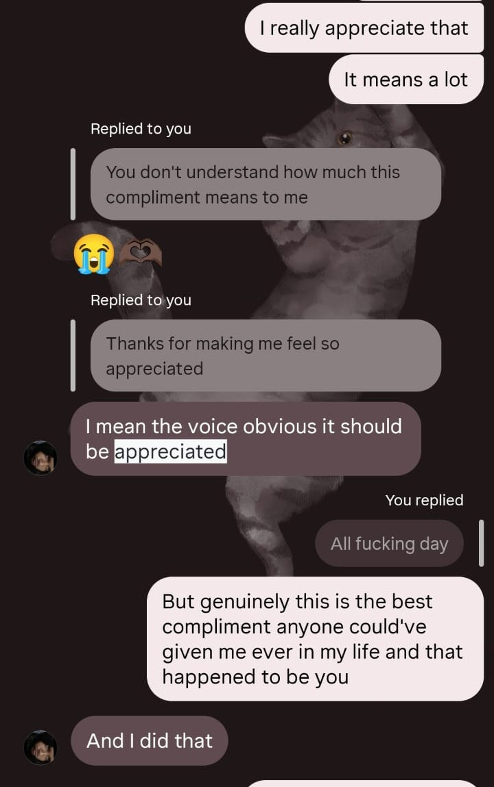
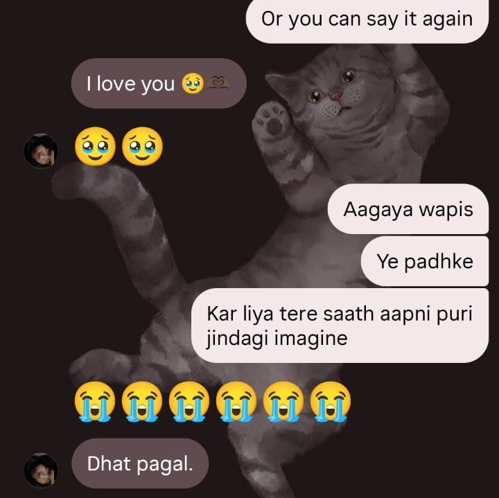
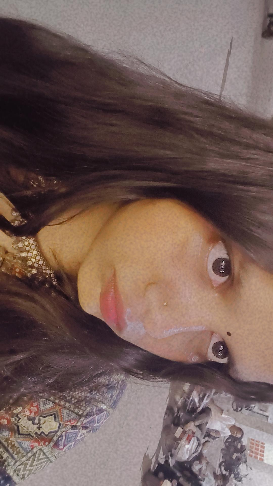

Some things don't need time to become true. They just need to be said honestly, when they're felt.
I still can't believe that I met the person that I love the most on the game that I hate the most. It's been a few days of knowing you Hanshni and in these days you've made me feek way more than anyone did in the past 17 years of my life. The day you told me about your views on the world and how you felt about people who may have mistreated me was the day that I realised that you were the one for me.
I promised myself that I'd never fall in love ever again after how hurt I was left the last time I did. But here I am. Hanshni you are truly special for me and one of the dearest persons I've ever met in my life to the point that i can die for you.



You do all this for me and still manage to call it "The bare minimum" while this is all I could ever ask for. That's what makes you the best.

What I do know about you is that you never got a stable partner. I wish to be that for you, the one who will push you to be better and stronger and the one who'll never leave you at your worst. I wanna be the constant person in your life on whom you can rely on no matter the circumstances.
And I promise you, as you know I dont break promises, If you give me the chance today, I will make sure that I marry you and keep putting in efforts and make you the happiest person alive. Yes I will do all of that.
watch this before you keep going
so, Hanshni —
will you be mine?
[ PLACEHOLDER — a final line for right after she says yes. Keep it short, let the moment breathe. ]
[ PLACEHOLDER — this page ends here, but say something about it not being the end of anything real — this is a start, not a finished thing. ]